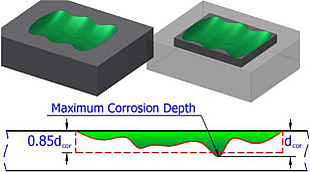
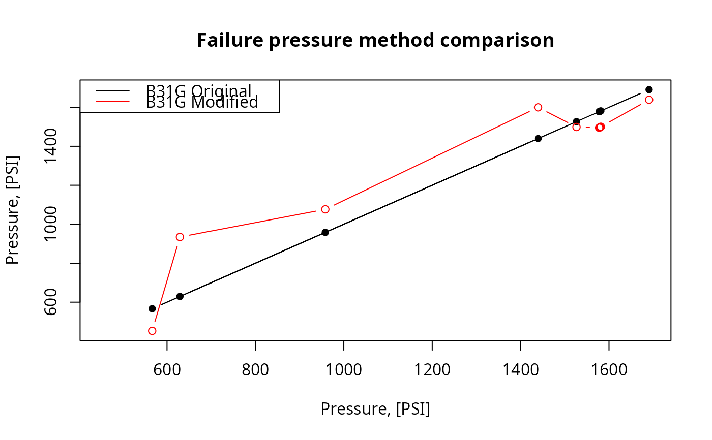

Calculate failure pressure of the corroded pipe according to Modified B31G, Level-1 algorithm listed in ASME B31G-2012.
The next assumption of corrosion shape is adopted by Modified B31G:

There dcor represents argument depth.
Arguments
- d
nominal outside diameter of pipe, [inch]. Type:
assert_double.- wth
nominal wall thickness of pipe, [inch]. Type:
assert_double.- smys
specified minimum yield of stress (SMYS) as a characteristics of steel strength, [PSI]. Type:
assert_double.- depth
measured maximum depth of the corroded area, [inch]. Type:
assert_double.- l
measured maximum longitudinal length of corroded area, [inch]. Type:
assert_double.
Details
Since the definition of flow stress, Sflow, in ASME B31G-2012 is recommended with Level 1 as follows:
$$Sflow = 1.1SMYS$$
no other possibilities of its evaluation are incorporated.
For this code we avoid possible semantic optimization to preserve readability and correlation with original text description in ASME B31G-2012. At the same time source code for estimated failure pressure preserves maximum affinity with its semantic description in ASME B31G-2012.
Numeric NAs may appear in case prescribed conditions of
use are offended.
References
ASME B31G-2012. Manual for determining the remaining strength of corroded pipelines: supplement to B31 Code for pressure piping.
S. Timashev and A. Bushinskaya, Diagnostics and Reliability of Pipeline Systems, Topics in Safety, Risk, Reliability and Quality 30, DOI 10.1007/978-3-319-25307-7
Examples
library(pipenostics)
## Example: maximum percentage disparity of original B31G
## algorithm and modified B31G showed on CRVL.BAS data
with(b31gdata, {
original <- b31gpf(d, wth, smys, depth, l)
modified <- b31gmodpf(d, wth, smys, depth, l)
round(max(100*abs(1 - original/modified), na.rm = TRUE), 4)
})
#> [1] 32.6666
## Output:
#[1] 32.6666
## Example: plot disparity of original B31G algorithm and
## modified B31G showed on CRVL data
with(b31gdata[-(6:7),], {
b31g <- b31gpf(depth, wth, smys, depth, l)
b31gmod <- b31gmodpf(depth, wth, smys, depth, l)
axe_range <- range(c(b31g, b31gmod))
plot(b31g, b31g, type = 'b', pch = 16,
xlab = 'Pressure, [PSI]',
ylab = 'Pressure, [PSI]',
main = 'Failure pressure method comparison',
xlim = axe_range, ylim = axe_range)
inc <- order(b31g)
lines(b31g[inc], b31gmod[inc], type = 'b', col = 'red')
legend('topleft',
legend = c('B31G Original',
'B31G Modified'),
col = c('black', 'red'),
lty = 'solid')
})
